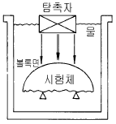
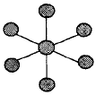

방사선비파괴검사기능사 (2004-02-01 기출문제)
1과목: 방사선투과시험법
1. 그림과 같은 시험체 속으로 에너지를 전달할 때 초음파 선속은 어떻게 되는가?

- 시험체내에서 퍼지게 된다.
- 시험체내에서 한점에 집중된다.
- 시험체내에서 평행한 직선으로 전달된다.
- 시험체에 들어가지 않는다.
(정답률: 알수없음)

2. 다음 중 침투탐상시험에서 불연속 검사는 언제 하는가?
- 세척후
- 침투액 적용후
- 건조체 적용후
- 현상제 적용후
(정답률: 알수없음)
3. 초음파탐상시험법에서 불연속의 깊이를 알 수 없는 것은?
- 수직법
- 투과법
- 경사각법
- 펄스반사법
(정답률: 알수없음)
4. 다음 중 결함의 깊이를 정확히 측정할 수 있는 일반적인 검사 방법은?
- 자분탐상시험
- 방사선투과시험
- 침투탐상시험
- 초음파탐상시험
(정답률: 알수없음)
5. 다음 중 1Ci의 방사능을 표시한 것으로 틀린 것은?
- 3.7×1010 dps
- 103mCi
- 106μCi
- 10-6kCi
(정답률: 알수없음)
6. 다음의 방사성 동위원소 중 방출되는 감마선의 에너지가 가장 센 것은?
- Co-60
- Ir-192
- Cs-137
- Tm-170
(정답률: 알수없음)
7. 반가층이 1.2㎝인 납판으로 γ선을 차폐한 결과 강도가 1/8 로 감소되었을 때 이 납판의 두께는?
- 1.2㎝
- 2.4㎝
- 3.6㎝
- 4.8㎝
(정답률: 알수없음)
8. 다음 중 X선의 선질과 관계없는 인자는?
- 투과력
- 파장
- 관전압
- 관전류
(정답률: 알수없음)
9. 방사선투과사진의 선명도(Definition)에 직접적으로 영향을 주는 것이 아닌 것은?
- 초점의 크기
- 계조계의 크기
- 스크린 재질
- 방사선질
(정답률: 알수없음)
10. 휴대용 X선 발생장치의 설명으로 틀린 것은?
- 개폐용 타이머는 제어기에 있다.
- X선 발생기에는 고압 변압기가 있다.
- 제어기와 X선 발생기는 저압케이블로 연결되어 있다.
- 필라멘트용 변압기는 제어기에 있다.
(정답률: 알수없음)
11. 다음 중 γ선조사장치의 구성에 포함되지 않는 것은?
- 원격 제어기
- 조사기 본체
- 고전압 변압기
- 제어 및 안내 튜브
(정답률: 알수없음)
12. 특수 전자가속장치중에 X선 튜브가 변압기내에 대칭으로 놓여 있으며 전자가 중간 전극에 의해 매우 높은 속도로 가속되고 초점 조정코일에 의해 자력으로 집중시키며 250~4,000kVp의 전압 범위에서 사용되는 가속장치는?
- 베타트론 가속장치
- 반데그라프 발생장치
- 선형 가속장치
- 공진 변압기형 X선장치
(정답률: 알수없음)
13. 방사선투과시험시 투과도계를 사용하는 목적은?
- 투과사진의 방사선 투과량을 알기 위하여
- 투과사진의 결함 크기를 비교 측정하기 위하여
- 투과사진의 질을 알기 위하여
- 투과사진의 농도를 알기 위하여
(정답률: 알수없음)
14. 다음 중 용접부에서 발생하는 결함이 아닌 것은?
- 기공
- 모래 혼입
- 슬래그 혼입
- 텅스턴 혼입
(정답률: 알수없음)
15. 다음 중 방사선투과시험에서 노출시간을 정할 때의 참고 자료는?
- 필름특성곡선
- 검량곡선
- 붕괴곡선
- 노출도표
(정답률: 알수없음)
16. 20Ci의 Ir-192 선원을 가지고 SFD 60㎝, 노출시간 5분으로 필름농도 2.5의 좋은 사진을 얻었다. SFD 90㎝로 같은 결과를 얻기 위해 적용해야 할 시간은?
- 5분
- 7.5분
- 11.25분
- 12.5분
(정답률: 알수없음)
17. 방사선 투과사진을 얻기 위한 사진처리의 주요 절차는?
- 현상 → 수세 → 정지 → 정착 → 건조
- 현상 → 정지 → 정착 → 수세 → 건조
- 현상 → 정착 → 수세 → 정지 → 건조
- 현상 → 수세 → 정착 → 정지 → 건조
(정답률: 알수없음)
18. 다음 방사선 투과사진의 인공 결함중에서 현상처리 전에 기인된 결함이라 볼 수 없는 것은?
- 필름 스크래치(scrach)
- 반점(spotting)
- 눌림표시(pressuere mark)
- 광선노출(light exposure)
(정답률: 알수없음)
19. 방사선 투과사진의 현상처리에서 온도와 관련한 설명이 잘못된 것은?
- 일반적으로 20℃에서 5분이다.
- 정지, 정착, 수세 처리에 있어서도 동일한 온도를 지키는 것이 중요하다.
- 지정 온도에서 처리가 곤란한 경우 18℃∼22℃ 범위라면 처리시간은 조정하여도 된다.
- 일반적으로 온도는 현상처리 과정에서 크게 문제가 되지 않는다.
(정답률: 알수없음)
20. 기하학적 불선명도와 관련하여 좋은 식별도를 얻기 위한 조건으로 틀린 것은?
- 초점이 작은 X-선 장치를 사용한다.
- 초점(선원)-시험체간 거리를 작게 한다.
- 필름을 시험체에 가능한한 밀착시킨다.
- 초점을 시험체의 수직 중심선상에 정확히 놓아야 한다.
(정답률: 알수없음)
2과목: 방사선안전관리 관련규격
21. 방사선의 강도와 거리의 관계에 대한 설명이 맞는 것은?
- 방사선의 강도는 거리에 정비례한다.
- 방사선의 강도는 거리의 제곱에 정비례한다.
- 방사선의 강도는 거리에 반비례한다.
- 방사선의 강도는 거리의 제곱에 반비례한다.
(정답률: 알수없음)
22. 방사선투과검사시 공간 방사선량율을 측정하는 장비는?
- 필름뱃지
- 서베이메터
- 포켓 도시메터
- 포켓 챔버
(정답률: 알수없음)
23. 산란선 제거용구로서 X선관에 부착되어 있지 않은 것은?
- 여과판(Filter)
- 조리개(Diaphragm)
- 콘(Cone)
- 마스크(Mask)
(정답률: 알수없음)
24. 와전류탐상검사에서 코일의 임피던스에 영향을 미치는 인자가 아닌 것은?
- 전도율
- 표피효과
- 투자율
- 도체의 치수변화
(정답률: 알수없음)
25. 방사선 투과사진을 판독할 경우 투과사진이 구비해야 할 조건이 아닌 것은?
- 투과도계의 사용 및 상질
- 관심부위 내에서의 농도차
- 투과사진의 농도
- 투과사진의 표식
(정답률: 알수없음)
26. "피폭 방사선량"에 대한 정의로 올바른 것은?
- 신체의 외부 또는 내부에 피폭하는 방사선량
- 일정기간 신체에 피폭이 허용되는 방사선량
- 진료를 위한 피폭선량과 자연방사선량의 합
- 피폭한 자의 피부,손,발 및 관절에 피폭한 방사선량
(정답률: 알수없음)
27. 방사선 오염방지의 3대 원칙이 아닌 것은?
- 작업시간 단축
- 조기발견
- 오염확대 방지
- 조기제염
(정답률: 알수없음)
28. 선량당량 단위는 rem(또는 Rem)을 사용하며 국제단위(SI)로는 Sv(시버트)를 사용한다. 다음 중 1rem을 국제단위로 맞게 환산한 것은?
- 1Sv
- 100mSv
- 10mSv
- 1mSv
(정답률: 알수없음)
29. 방사선의 종류에 따른 차폐방법을 설명한 것으로 틀린 것은?
- X선은 원자번호가 큰 물질로 차폐한다.
- 중성자는 감속시켜 차폐체에 흡수시킨다.
- β입자는 제동복사를 고려한다.
- γ선의 차폐는 가벼운 원소가 효과적이다.
(정답률: 알수없음)
30. 방사선과 관련하여 반치사량(LD-50)이란 50% 사망할 수 있는 피폭선량을 말한다. 이는 몇 rem정도를 말하는가?
- 100rem
- 400rem
- 700rem
- 1000rem
(정답률: 알수없음)
31. 원자력법 시행령에서 규정하는 선량한도가 잘못 설명된 것은?(관련 규정 개정전 문제로 여기서는 기존 정답인 1번을 누르면 정답 처리됩니다. 자세한 내용은 해설을 참고하세요.)
- 수시출입자에 대한 유효선량한도는 연간 50mSv이다.
- 방사선작업종사자에 대한 유효선량한도는 연간 50mSv를 넘지 아니하는 범위에서 5년간 100mSv이다.
- 운반종사자에 대한 유효선량한도는 연간 12mSv이다.
- 일반인에 대한 유효선량한도는 연간 1mSv이다.
(정답률: 알수없음)
32. KS B 0845에 의한 강용접부의 투과사진을 흠 상의 분류시 다음 중 흠 길이를 구하지 않는 것은?
- 융합불량
- 갈라짐
- 슬러그 말아넣음
- 용입불량
(정답률: 알수없음)
33. KS D 0241에 의한 알루미늄 주물의 방사선투과시험시 사용되는 방사선에너지는 원칙적으로 조사시간에 적합한 어떤 에너지를 사용하도록 규정하고 있는가?
- 산술 평균 에너지
- 가장 낮은 에너지
- 중간 값 에너지
- 가장 높은 에너지
(정답률: 알수없음)
34. 다음 중 KS B 0845에서 규정하는 강용접부의 제2종 흠이 아닌 것은?
- 슬러그 말아넣음
- 용입 불량
- 융합 불량
- 수축관
(정답률: 알수없음)
35. KS D 0242에 따라 알루미늄 평판 접합 용접부를 방사선투과시험할 때 관전압이 몇 kV미만의 촬영인 경우 증감지를 사용하지 않는가?
- 80kV
- 100kV
- 150kV
- 200kV
(정답률: 알수없음)
36. KS B 0845에 의한 계조계의 종류, 구조, 치수 및 재질에 대한 설명으로 잘못된 것은?
- 계조계의 종류로는 15형, 25형, 35형이 있다.
- 계조계의 두께에 대한 치수 허용차는 ±5%이다.
- 계조계의 한 변의 길이에 대한 치수 허용차는 ±5mm이다.
- 계조계의 재질은 KS D 3503에 규정하는 강재로 한다.
(정답률: 알수없음)
37. 알루미늄 관용접부를 KS D 0243에 의거 2중벽 양면촬영으로 방사선투과검사할 때 관 두께가 15mm라면 사용되어야 할 계조계는?
- D 0
- E O
- F O
- G O
(정답률: 알수없음)
38. KS D 0242의 알루미늄용접부에 대한 투과사진의 흠집모양의 분류시 3종류의 흠집수가 연속하여 시험시야의 몇 배를 넘어서 존재하는 경우 4종류로 하는가?
- 2배
- 3배
- 4배
- 5배
(정답률: 알수없음)
39. KS B 0845에 의한 투과사진의 흠 분류시 사용되는 관찰기의 설명으로 올바른 것은?
- 투과사진의 최고 농도가 1.8이하인 경우 D10형을 사용한다.
- 투과사진의 최고 농도가 2.0이하인 경우 D15형을 사용한다.
- 투과사진의 최고 농도가 3.5이하인 경우 D30형을 사용한다.
- 투과사진의 최고 농도가 4.0이하인 경우 D40형을 사용한다.
(정답률: 알수없음)
40. KS B 0845 부속서2, 강관의 원둘레 용접이음부의 투과사진의 촬영 방법이 아닌 것은?
- 내부 선원 촬영방법
- 내부 필름 촬영방법
- 단일벽 편면 촬영방법
- 2중벽 양면 촬영방법
(정답률: 알수없음)
3과목: 금속재료일반 및 용접 일반
41. 디지털 신호를 전화선을 통하여 직접 전달될 수 있도록 아날로그 신호로 바꾸어 주고, 전화선을 통해 전송된 아날로그 신호를 디지털 신호로 바꾸어 주는 장치는?
- 프로토콜(protocol)
- 에뮬레이터(emulator)
- RS-232C
- 모뎀(modem)
(정답률: 알수없음)
42. 팬티엄Ⅱ 프로세서에서 가격을 낮추기 위해 L2캐시(외부캐시)를 제외시킨 프로세서는?
- MMX
- EDO
- CELERON
- 팬티엄Ⅲ
(정답률: 알수없음)
43. 데이터 통신 시스템을 이용해서 개인용 컴퓨터 사용자들이 공지사항들을 접할 수 있는 방법은?
- 전자 금전 결재
- 전자 자료 교환
- 전자 게시판
- 재택 근무
(정답률: 알수없음)
44. 컴퓨터 네트워크 구성형태 중 그림과 같이 중앙에 메인컴퓨터를 두고 단말기들이 연결된 토폴로지(topology)는?

- 성형(star)
- 버스(bus)
- 망형(mesh)
- 트리(tree)
(정답률: 알수없음)
45. 다음 도메인 이름 중에서 기관분류가 교육기관에 속한 사이트의 이름은?
- ddd.univ.co.kr.
- db.ccc.re.kr
- aaa.bbb.ac.kr
- ftp.univ.go.kr
(정답률: 알수없음)
46. 금속에서 소성변형이 일어나는 원인과 관련이 가장 깊은 것은?
- 비중
- 비열
- 경도
- 슬립
(정답률: 알수없음)
47. 비중이 알루미늄의 약 2/3 정도이고 산화가 일어나는 금속은?
- Mg
- Cu
- Fe
- Au
(정답률: 알수없음)
48. 금속의 결정 격자에서 단위포의 길이 단위는?
- m
- Å
- ㎜
- inch
(정답률: 알수없음)
49. 침입형 고용체가 될수 없는 원소는?
- B
- N
- Cu
- H
(정답률: 알수없음)
50. 순철에 가장 가까운 것은?
- 공정철
- 림드철
- 가단주철
- 전해철
(정답률: 알수없음)
51. Fe-C 계 평형상태도에서 주철의 탄소 함유량(%)은?
- 0.02 ∼ 0.5
- 0.6 ∼ 1.5
- 2.00 ∼ 6.67
- 6.67 이상
(정답률: 알수없음)
52. 면심 입방격자인 Ni 의 자기변태 온도(℃)는?
- 약 1160
- 약 910
- 약 768
- 약 358
(정답률: 알수없음)
53. 탄소강에서 나타나는 상온메짐의 원인이 되는 주 원소는?
- 인
- 황
- 망간
- 규소
(정답률: 알수없음)
54. 내열강의 주성분이 될 수 없는 것은?
- Cr
- Ni
- Si
- S
(정답률: 알수없음)
55. 600℃ 에서 6:4 황동(muntz metal)의 평형상태도 조직은?
- α + β
- β + γ
- β
- α
(정답률: 알수없음)
56. 구리와 아연의 합금은?
- 산소동
- 탈산동
- 황동
- 청동
(정답률: 알수없음)
57. 내열강으로 요구되는 성질이 아닌 것은?
- 고온에서 침식과 산화가 잘 될 것
- 고온도가 되어도 외력에 의해 변형하지 않을 것
- 조직이 안정되어 있어 급냉에 견딜 것
- 가공성이 좋을 것
(정답률: 알수없음)
58. 내용적 50ℓ 산소용기의 고압력계가 150기압일 때 프랑스식 250번 팁으로 사용압력 1기압에서 혼합비 1:1을 사용하면 몇시간 작업할 수 있는가?
- 20 시간
- 30 시간
- 40 시간
- 50 시간
(정답률: 알수없음)
59. 다음 잔류응력 제거방법 중 효과가 가장 크며 전제품을 가열한 후 냉각하는 것은?
- 국부 풀림법
- 기계적 응력 완화법
- 노내 풀림법
- 저온 응력 완화법
(정답률: 알수없음)
60. 다음 중 직류 정극성에 속하는 모재와 용접봉의 극성은?
- 모재(+), 용접봉(-)
- 모재(-), 용접봉(+)
- 모재(+), 용접봉(+)
- 모재(-), 용접봉(-)
(정답률: 알수없음)